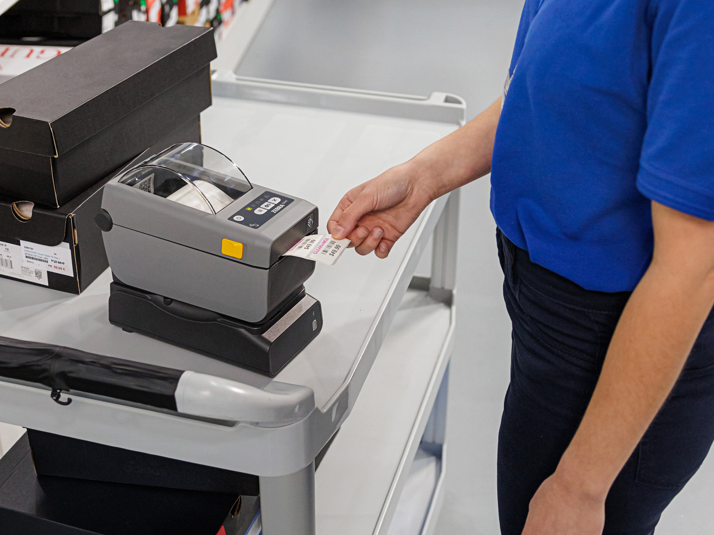
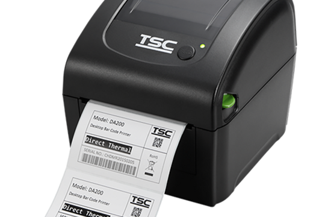
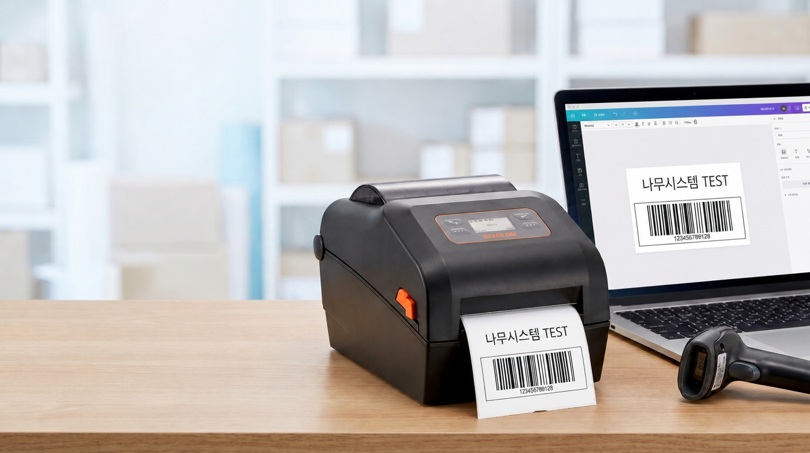

제품/표시/성분표기
제품명, 성분, 제조일, 유통기한, LOT 정보를 라벨로 발행합니다.
- 식품·화장품·생활용품 라벨
- KS규격 상담 후보 정리
다양한 산업 현장에서 거복이의꿈 패키지가 활용됩니다.
제품명, 성분, 제조일, 유통기한, LOT 정보를 라벨로 발행합니다.

입고와 출고 라벨을 분리하고 위치, 수량, 박스 정보를 연결합니다.

가격표, 상품 조회, 진열 위치 확인에 필요한 바코드 흐름을 상담합니다.

일련번호, 계약/문서 ID, 추적 관리용 라벨을 업무 기준으로 정리합니다.

부품 관리, LOT, 시리얼 코드, 불량 추적 라벨 구성을 검토합니다.

원재료, 보관 조건, 유통기한, 알레르기 표시 라벨을 상담합니다.